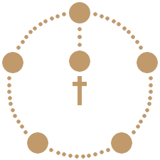

Design: Minimalist, Self-Reflective
Development: Mobile-First, Fluid
Description: A walk-through guide for rosary prayers.


Initial wireframes focused on creating a pattern based on an image of the rosary beads followed by the accompanying prayer.

A minimal visual representation of the beads of the rosary became the icon which accompanied each prayer.
The current prayer corresponding bead is represented by a light red highlight.
Prayers change daily, and the system updates accordingly.
Using JQuery, praytherosary.nyc always displays the correct daily prayer.